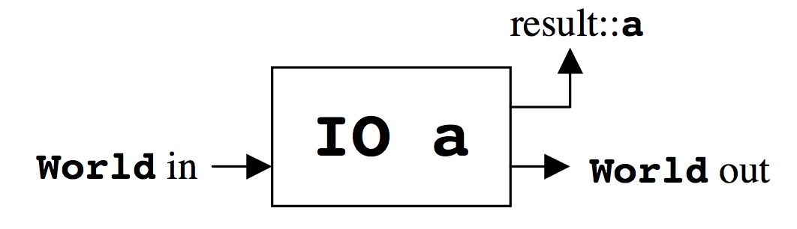
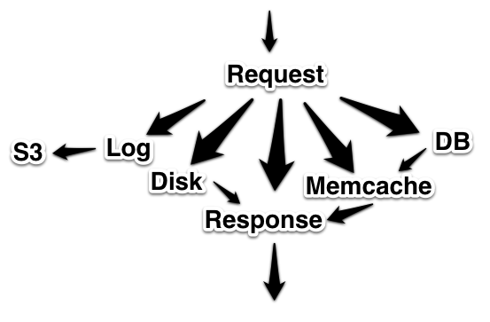
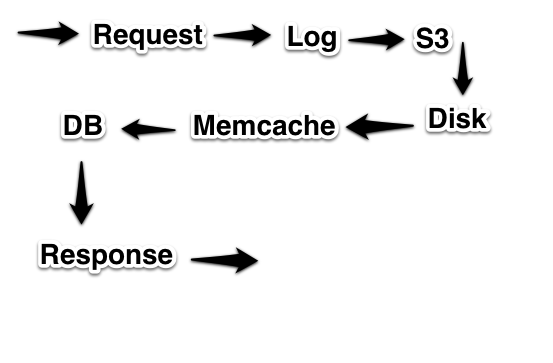
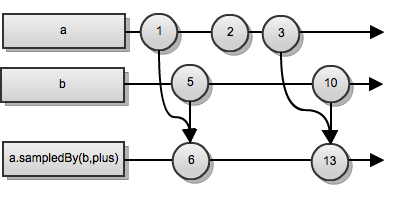
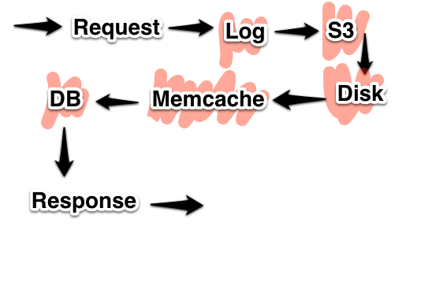

"Don't let the awkward squad fire over me." – Robert Burns
IO
main :: [Response] -> [Request] data Request = ReadFile FilePath | WriteFile FilePath String | .... data Response = RequestFailed | ReadSucceeded String | WriteSucceeded | ...

Concurrency & distributed computation


Will be remembered as the C of distributed computing
Elm, ReactiveML, Bacon.js  An example
Implicit event order = state is hidden (see Mario)
State
Get unique Supplier (sno = 16) Until no-more { Get next Part (color = red) }
2 < 3
exists (select * from lessthan where lhs = 2 and rhs = 3)
{ "doc-store":"lessthan", "facets":["lhs":"2", "rhs":"3"] }
lessthan[2].contains?(3)
3 ∈ (start a = node(2) match a-[:lessthan]->b return b)
posts[timestamp >= yesterday] => [{ "title": "I like cats", "comments":[...] }, { "title": "I like dogs", "comments":[...] }]
posts[timestamp >= yesterday] => [{ "title": "I like cats", "comments":[...] }, { "title": "I like dogs", "comments":[...] }, { "title": "I like gerbils", "comments":[...] }, { "title": "I like ferrets", "comments":[...] }, ...and 10 million more]
You upgraded a library of functions in production without testing
Also sprach Rich Hickey: Code and data shall be treated the same
Errors

$DEITY
A solution
What is the essential difficulty inherent in the problem you're trying to solve?